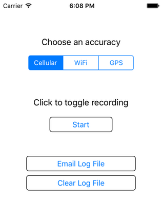

- Section 1 - Location APIs and Exploring the Power Drain vs Accuracy Tradeoff
- Getting Started
- iOS Location Primer
- Task 1 - Capture Location Data
- Implement startRecordingLocationWithAccuracy
- 1.2 Implement stopRecordingLocationWithAccuracy
- 1.3 Implementing didUpdateLocations
- 1.4 Capture some data
- Task 2 – Compare the Accuracy of the Location Methods
- Task 3 – Compare the Battery Drain of the Location Methods
- Section 2 – Building the Anteater Compass
- Submission Instructions
In this lab, you will start by developing a small standalone application to measure location data, and then you will integrate location API support into Anteater.
Labs in 6.808 consist of a number of tasks, each of which has one or more deliverables. This lab has 2 sections, the first dealing with the standalone app and the second with Anteater.
You may work on this lab in pairs.
Section 1 : Location APIs and Exploring the Power Drain vs Accuracy Tradeoff
In Section 1, you will use a standalone iOS app called PositionLogger
The PositionLogger app allows you to log position data at different accuracies, using different positioning technologies, including WiFi, Cellular, and GPS.
We've provided most of the code for the PostitionLogger App, including a simple UI for choosing a desired accuracy, as well as an interface to email a log file of recorded positions out of the app. The main UI of the PostionLogger is shown below:
Your job is to implement the calls to the iOS CoreLocation API to request location updates at the desired accuracy, and then compare the accuracy and power drain of the different approaches.
Getting Started
- Download the PositionLogger source code.
- Unzip it by typing "tar -xvzf PositionLogger.tar.gz". This will create a directory called "PositionLogger-Blank", containing an XCode project.
- Open PositionLogger.xcodeproj in XCode on a Mac (recall that the lab in 38-500 has Macs available for your use). Compile and run the app, either on your device or in the simulator (use any of the iPhone simulators.) It should show a screen like what you see above. Clicking on the Start button should cause it to enter a recording state, but it won't actually be writing location data until you add the code to record location.
iOS Location Primer
The primary way that location is accessed on iOS use though the CoreLocation class CLLocationManager. Using this class you can request location updates at a certain accuracy, and also configure the accuracy with which data is created.
In the PostionLogger app, the main screen is an instance of a ViewController object (as specified in ViewController.m.) iOS creates one instance of the ViewController class for us when the application is initialized, because the Main.storyboard file, which we chose as the main storyboard for the app in the Info.plist file, specifies that the initial view for the app should be an instance of ViewController.
In the viewDidLoad method of ViewController.m, we've already created an instance of a CLLocationManager object for you to use and initialized some of the relevant properties of it. These are the lines at the beginning of the viewDidLoad method:
1 self.locationManager = CLLocationManager()
2 self.locationManager?.requestAlwaysAuthorization()
3 self.locationManager?.allowsBackgroundLocationUpdates = true
4 self.locationManager?.delegate = self
5 self.locationManager?.distanceFilter = kCLDistanceFilterNone
6 self.locationManager?.disallowDeferredLocationUpdates()You can read about the details of the methods in the CLLocationManager documentation, but the gist of this code is that we are requesting that:
Lines 2 & 3: Location updates be delivered all them time, even when the app is in the background (we have also added an entry to the "Required Background Modes" dictionary of the Info.plist file in the project to allow this to work).
Line 4: The LocationManager will call methods indicating the arrival of new data on our class (we are the "delegate" of the LocationManager).
Line 5: We want location updates whenever they are available (no matter how little the phone has moved).
Line 6: We want iOS to deliver location updates to us immediately, not batch them together.
Note that the settings in line 5 & 6 may have negative implications on the battery life of the device, but they will allow us to get the highest fidelity data for this lab.
Task 1 – Capture Location Data
The goal of this first task is to log location data to a file and perform some simple analysis of the data.
To acquire the log, you will need to modify the PositionLogger app to start capturing location samples when the "Start" button is tapped. Open the ViewController.m file. We have implemented most of this class for you -- scroll down and find the hitRecordStopButton method:
if(!self.isRecording) {
self.accuracyControl.isEnabled = false
sender.setTitle("Stop", for: UIControlState.normal)
self.isRecording = true
self.recordingIndicator.startAnimating()
switch self.accuracyControl.selectedSegmentIndex {
case 0:
self.startRecordingLocationWithAccuracy(LocationAccuracy.Cellular)
case 1:
self.startRecordingLocationWithAccuracy(LocationAccuracy.WiFi)
case 2:
self.startRecordingLocationWithAccuracy(LocationAccuracy.GPS)
default: ()
}
} else {
self.accuracyControl.isEnabled = true
sender.setTitle("Start", for: UIControlState.normal)
self.isRecording = false
self.recordingIndicator.stopAnimating()
self.stopRecordingLocationWithAccuracy()
}This method calls startRecordingLocationWithAccuracy or stopRecordingLocationWithAccuracy as appropriate. You need to implement the body of these methods.
1.1 Implement startRecordingLocationWithAccuracy
startRecordingLocationWithAccuracy should set the desiredAccuracy property of the _locMgr object to the appropriate accuracy based on the supplied value of the acc argument. Note that iOS does not explicitly allow an application to request GPS, WiFi, or Cellular positioning -- instead it provides the following constants to choose from:
extern const CLLocationAccuracy kCLLocationAccuracyBestForNavigation;
extern const CLLocationAccuracy kCLLocationAccuracyBest;
extern const CLLocationAccuracy kCLLocationAccuracyNearestTenMeters;
extern const CLLocationAccuracy kCLLocationAccuracyHundredMeters;
extern const CLLocationAccuracy kCLLocationAccuracyKilometer;
extern const CLLocationAccuracy kCLLocationAccuracyThreeKilometers;1.2 Implement stopRecordingLocationWithAccuracy
stopRecordingLocationWithAccuracy just needs to call stopUpdatingLocation on the CLLocationManager object. (It's OK to call this function on the CLLocationManager even if it is already stopped.)
1.3 Implementing didUpdateLocations
The next step is to implement code to log position updates as they arrive. We've already set up the instance of ViewController.m as the delegate of the CLLocationManager object. This means that it will call the didUpdateLocations method on ViewController.m when a location update is available. You need to implement this method. Its signature is as follows:
- (void)locationManager:(CLLocationManager *)manager didUpdateLocations:(NSArray *)locations;
Tip for Objective-C: You can find this definition in the CLLocationManager.h iOS header file, which you can open by typing ⌘-shift-O and then entering the first few characters of the file's name.
Your implementation of didUpdateLocations should iterate through the locations and log them to the file. We've provided a method logLineToDataFile that logs a string (NSString object for Objective-C, String for Swift) to the log file (which you can then email to yourself using the email button.)
In the later part of this lab, you're going to visualize and analyze this data, so you'll need to at minimum log the reading's timestamp, latitude, longitude, and horizontal accuracy, along with the battery level of the device. To get the current battery level you can call:
UIDevice.current.batteryLevelWe'd also suggest logging the course (bearing) and speed attributes from the supplied CLLocation objects. For time, we suggest just converting the timestamp (NSDate) object in each CLLocation to a Unix time stamp:
location.timestamp.timeIntervalSince1970Note that we currently write a header at the start of the log file in the viewDidLoad method:
self.logLineToDataFile("Time,Lat,Lon,Altitude,Accuracy,Heading,Speed,Battery\n")You may want to modify this depending on what you choose to log.
1.4 Capturing some data
We've implemented the rest of the application to allow you to capture data from it and email data to yourself. Verify that it works by attempting to log some data with GPS accuracy on your phone and email it to yourself (note that location updates can be simulated in the simulator, but that the simulator does not support the email interface properly).
In the rest of this part of the lab you'll collect some data outdoors and compare the different location methods, looking at accuracy and power of the different techniques.
There are no deliverables for this task.
Task 2 – Compare the Accuracy of the Location Methods
In this exercise, you will walk from the corner of Vassar and Main to the corner of Vassar and Mass Ave three times. For each walk, you'll run the app at a different location accuracy, and compare the difference in the overall estimated distance and plot the points on a map.
See this map for the route you will walk: https://www.google.com/maps/d/edit?mid=zcVI9zKum-vM.kVzhADJu9RDg&usp=sharing
According to Google, the length of this route is .306 miles (492.5 meters).
Specifically, for each of the three accuracy settings:
- Start at one end of the route
- If you have other apps on the phone, we suggest disabling location services for any that are currently using location services, in Settings->Privacy. This is important because other apps using location services can cause your app to receive a finer granularity of location data that you requested.
- Open the app, set to the desired accuracy setting, and start recording
- Walk the route (you can close the app or leave it open)
- At the end of the route, start recording, and email yourself the log file.
- Clear the log
Once you have the three log files, your task is to compute the "connect the dots" distance for each path, and to plot each path on a map.
The "connect the dots" distance of a path is just the sum of the distances between every consecutive point. Each point is a latitude/longitude pair, which represents a point on the surface of the earth. For points that are close together, Euclidian distance is a close approximation of the actual distance, but for points that are far apart, a straight line can be quite far from the true distance between these points, which follows an arc on the surface of the Earth. The typical way to estimate this distance is to assume the Earth is a sphere (it isn't exactly spherical but pretty close), and to use the haversine formula discussed in class to compute the distance between the two points:
where the two points are (lat1,lon1) and (lat2,lon2) and r is the Earth's radius (6371 km). Be sure to convert lat/lon to radians (multiply by Pi and divide by 180.0 ) before using built-in trigonometric functions (see https://en.wikipedia.org/wiki/Haversine_formula).
For each of the three logs, compute the "connect the dots" distance between all points in the trace using the haversine formula. How does it compare to the measure .306 miles?
In addition, plot each of the three files on a map. We've provided a script, csv2kml.py, that will convert a csv file with a header line that includes "Lat" and "Lon" fields into a KML file that you can view on Google Earth or import into Google My Maps (https://mapsengine.google.com/map/). If you'd prefer, you may visualize these files using some other method than Google Maps / Google Earth.
The deliverables for this task are the connect-the-dots distance you computed for the three different walks, as well as a plot of each of the three walks you did on a map.
Task 3 – Compare the Battery Drain of the Location Methods
For this task, you will compare the battery drain of the cellular and GPS location accuracy settings. To do this, you'll need to start logging and let the app run for several hours (4 hours should be long enough), and then compare the battery level and the rate of drain while the app runs.
For the cellular and GPS settings
- Fully charge the phone
- If you have other apps on the phone, we suggest disabling location services for any that are currently using location services, in Settings->Privacy. Also, enable Low Power Mode in Settings->Battery.
- Open the app, set to the desired accuracy setting, and start recording
- Turn off the screen and do not use the phone for 4 hours. The app will continue to record in the background.
- Stop recording and email yourself the file.
- Clear the log.
Once you have the two log files, make a plot of the battery level of each over time, by using the time and battery level fields in the file. You can make your plot which whichever tool you like: Google Charts, Excel, pyplot, etc.
The deliverable for this task is the graph of the battery drain of the two different location methods. Note that if you don't have cellular service on the phone, running with cellular accuracy may produce results different than you expect!
Section 2 – Building the Anteater Compass
In this part of the lab, you'll work with the Anteater app and add location-based features.
Recall that the Anteater App is a crowdsourced sensor data collection app, where users earn points for collecting sensor data from nearby sensors. In the Anteater app, mobile devices are the anteaters, and the sensors are the anthills.
Start by downloading the Anteater App Skeleton.
Untar this file to create a directory called "anteater-blank". Open the anteater.xcodeproj file in this directory in XCode. You should be able to build and run the project in the simulator or your phone. This app is not able to connect to Bluetooth-based Anthills (you'll do that in the next lab), and the compass won't rotate (that's the goal of this lab).
In later labs you'll work on the code to connect to the anthills, but for the second part of this lab, your job is to implement the compass UI in Anteater, as shown in the screenshot below.

In this interface, the orange arrow points the user what direction they should turn/walk to move towards the selected Anthill.
To compute the direction this arrow should point, you need to measure the angle between the user's current position (represented by a lat/lon point), and the destination anthill. The conventional way to do this is to model the earth as a sphere, and measure the angle of vector from the origin to the destination along the shortest path (the "great circle path"). The trigonometry to do this is fairly hairy, but thanks to the Internet the formula is easy to look up. Here's the code to do this:
atan2(sin(lon2-lon1)*cos(lat2), cos(lat1)*sin(lat2)-sin(lat1)*cos(lat2)*cos(lon2-lon1)
Here (lat1,lon1) is the starting point, and (lat2,lon2) is the ending point. In this formula, lat and lon need to be converted to radians, and the result is in radians.
If you are curious about the derivation of this, there's a good explanation half way down this post: http://mathforum.org/library/drmath/view/55417.html
From the article: "Let's define three unit vectors, each in the direction of the line from the center of the earth to a point on the surface: N in the direction of the north pole, A in the direction of the initial point, and B in the direction of the final point on the course. Then the bearing we seek is the angle between the plane containing N and A, and the plane containing A and B. Thus it equals the angle between vectors perpendicular to these planes, namely, NxA and BxA."
Computing this is straightforward trigonometry, although the explanation for the use of the atan2 function is non-obvious.
Once you've figured out the angle between the user's current location and the destination anthill, you need to figure out the orientation of the phone relative to North, and subtract that angle from the bearing to the destination, as shown in this diagram:

Putting it all together, once you compute the two angles, subtract θ2 from θ1, and set the rotation of the compass graphic to that value. (To see why we subtract θ2, imagine that the phone is already pointed in the direction of the destination. In that case, θ1≈θ2.)The next task will walk you through implementing the steps.
Task 4 - Rotate the Compass Needle Image
There are three subtasks: first, get the user's location and compute θ1 (based on the currently selected anthill); second, compute the orientation of the phone and compute θ2; third, set the orientation of the needle image.
We've created CompassViewController.m for you, but you will need to write most of the code. We've configured the UI to have a reference to the needle image.
4.1 Compute θ1
You can compute θ1 using the above formula once you have both the user's location and the location of a target anthill. In the code we've given you, there is an _anthills array that is loaded when the view appears. We've provided a method called curSelectedLocation that will return the location of the currently selected anthill (when anthills is non-null/has been loaded.)
When the user changes the currently selected anthill, the following method will be called:
func pickerView(_ pickerView: UIPickerView, didSelectRow row: Int, inComponent component: Int) {
}You should fill in the body of this with code to recompute the angle to the current anthill. You may want to define a helper function to do this, because you will also want to recompute when the user's location changes.
We've also initialized a CLLocationManager object and request that it start providing location updates to CompassViewController. You'll need to fill in the body of the didUpdateLocations method to get the user's current location, and update the current estimated angle to the selected anthill (using the same function you defined when the anthill changed.)
Note: to extract the latitude and longitude of the anthill, use this:
let anthill = self.anthills?[row] as! [String: Any]?
let lat = anthill?["lat"] as? NSNumber
let lon = anthill?["lon"] as? NSNumber4.2 Compute θ2
Modern iPhones have a magnetometer that can measure the orientation of the phone with respect to the Earth's magnetic field (its heading). An app can be requested to be notified of the phone's heading as it changes by calling the startUpdatingHeading method on the CLLocationManager object. We have already done this for you in CompassViewController.m's viewDidLoad method. You should fill in the body of the locationManager:didUpdateHeading method with code to compute θ1 - θ2. You can access the current heading of the device (in degrees) by accessing the trueHeading property of the provided newHeading object.
4.3 Rotate the Needle by θ1 - θ2
Whenever you get an update to the device's location or orientation, or a new anthill is selected, you should update the rotation of the needle. The needle is a UIView that is available as a property of CompassViewController. In iOS you can rotate (and scale/transform) any view simply by setting the value of the transform field of the view. This field is an instance of a CGAffineTransform struct. You can create a transform that specifies a particular rotation by calling the CGAffineTransformMakeRotation function in Objective-C or CGAffineTransform.init with rotationAngle in Swift. Create a transform and assign it to the needle property of your CompassViewController. The UI will automatically rotate the view to the correct orientation.
In addition, set the text of the distanceLabel label to the distance to the current anthill and the text of the headingLabel label to θ1 - θ2.
The deliverable for this task is a working implementation of the Anteater compass.
Submission Instructions
A complete lab will consist of:
- Estimated distances for the three methods from Task 2, as well as maps of the points.
- Plots of the battery drain for Task 3
- A working compass demonstration for Task 4
A TA will checkoff your lab when you are finished. We will hold checkoffs on Monday February 26 4pm-5pm and Tuesday February 27 4pm-5pm in the 32-G9 lounge.